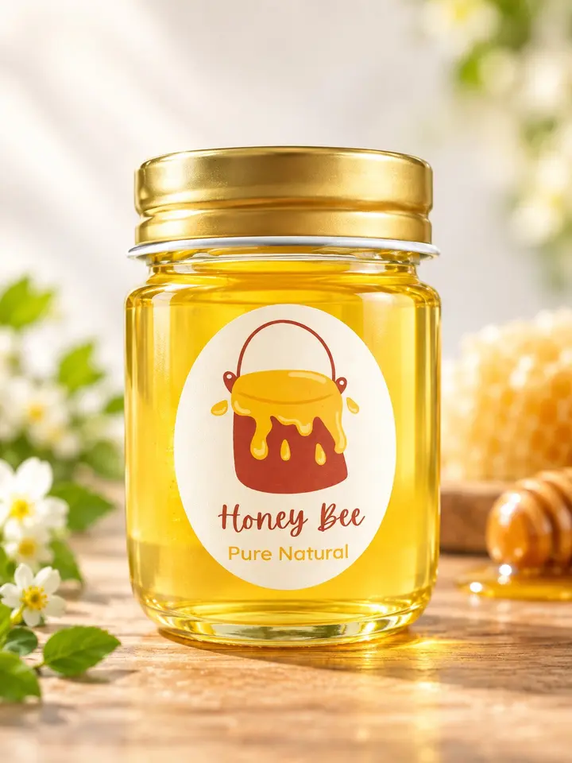
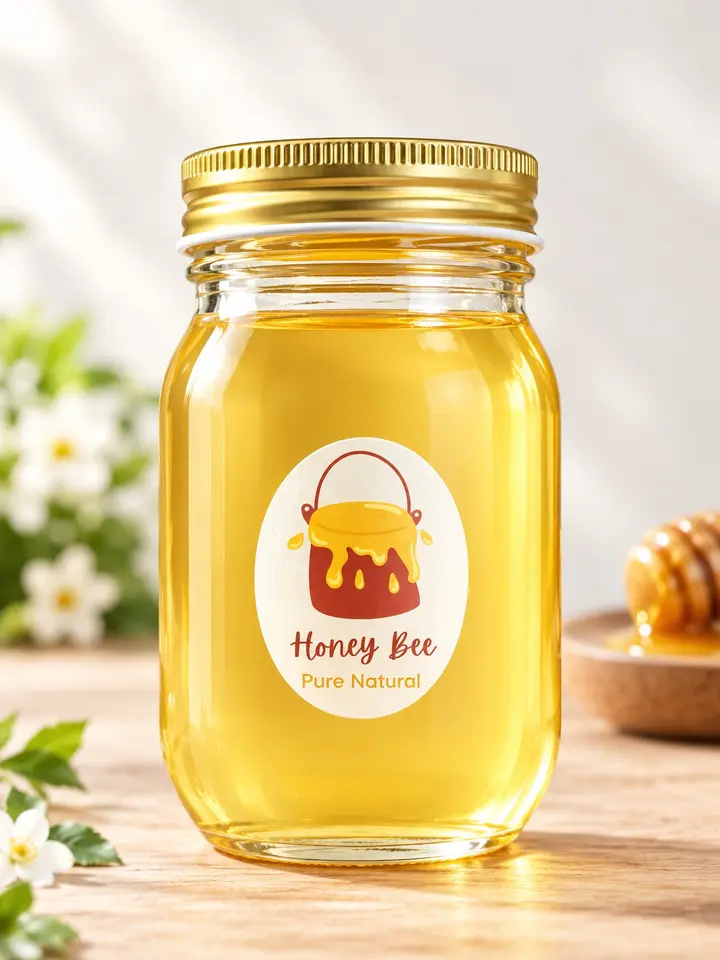
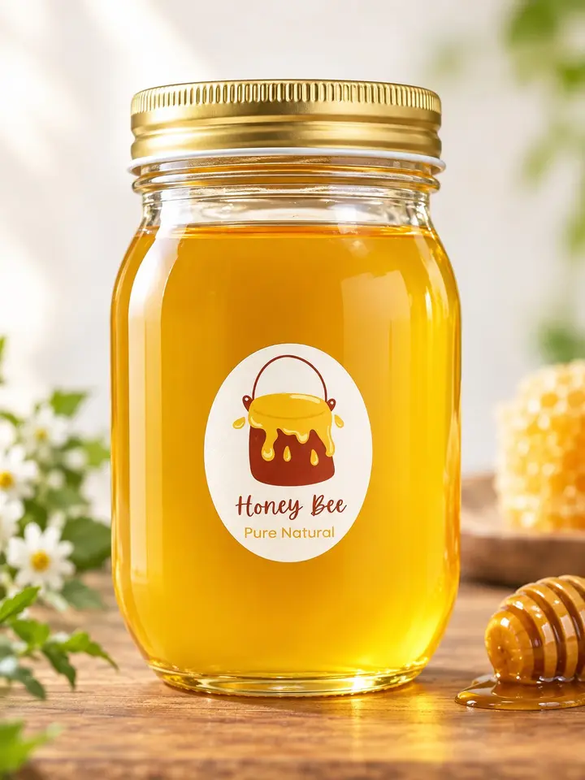

採蜜日が明確
いつ採れた蜂蜜なのかを大切にし、採蜜日を記録。季節ごとの香りや味わいとともにお届けします。
MIKI, HYOGO
花が咲き、蜂が飛び、蜜になる。
三木市の自然と歩幅を合わせてつくる蜂蜜です。
自然のままに、丁寧に。
私たちが向き合うのは、ミツバチだけではありません。山の木々、野に咲く花、風や雨、移り変わる季節。そのすべてと相談しながら、ひとつずつ手仕事で瓶に詰めています。
同じ場所でも、同じ蜜は二度と採れない。
養蜂場について知る ↗蜜を採る時も、蜂たちが暮らしていく分を大切に。小さな養蜂場だからこそできる、目の届くものづくりを続けています。
いつ採れた蜂蜜なのかを大切にし、採蜜日を記録。季節ごとの香りや味わいとともにお届けします。
砂糖水などの給餌に頼らず、ミツバチが花から集めた蜜を、自然の恵みとして瓶に詰めます。
高温で加熱せず、採れた蜂蜜の風味を大切に。花の香りと、自然な味わいをそのまま楽しめます。
採れる花や時期によって、色も香りも変わります。三木市の季節を、そのままお楽しみください。

ほたるの蜂蜜 50g
650円オンラインで購入 →
ほたるの蜂蜜 300g
3,500円オンラインで購入 →
ほたるの蜂蜜 600g
7,000円オンラインで購入 →春から秋へ、咲く花が移り変わるたび、蜂蜜の表情も変わります。ミツバチが訪れる花をたどり、一匙の蜜の向こうにある季節をご紹介します。
防護服を着て巣箱をのぞき、蜂の暮らしや自然とのつながりを学びます。採れたての蜂蜜を味わう、小さな里山体験です。
ONLINE SHOP
ほたる養蜂園の蜂蜜を、
オンラインショップからご購入いただけます。
商品や養蜂体験について、
お気軽にお問い合わせください。
所在地兵庫県三木市吉川町水上715